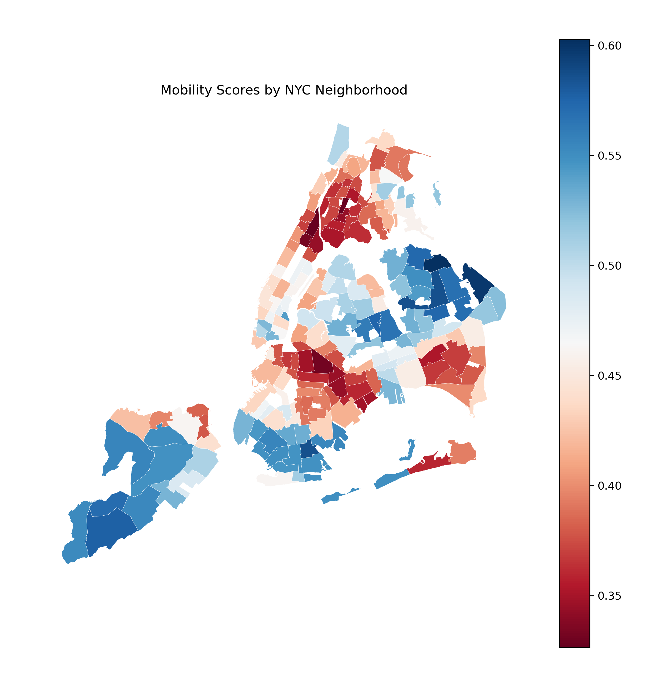
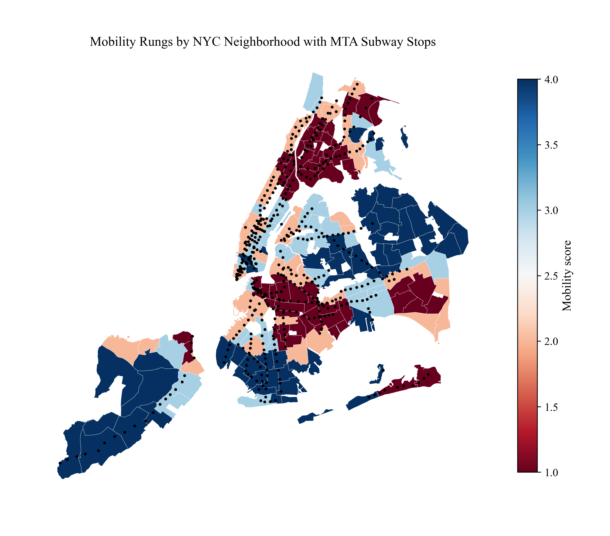
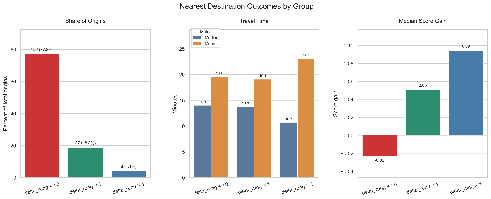
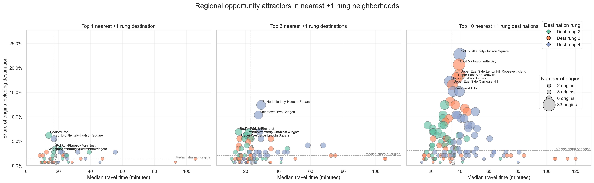
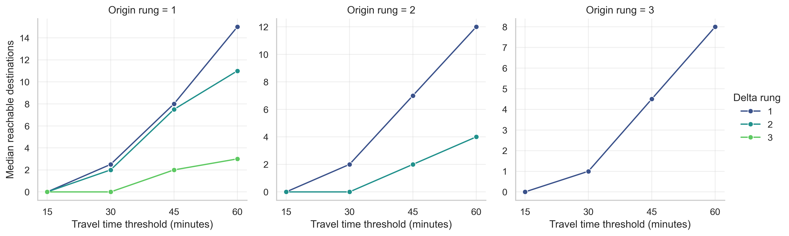

Abstract
Upward economic mobility in American cities is shaped not only by residential characteristics, but by where they go. Research suggests that the places people visit — not just the ones they reside in — play a meaningful role in determining their exposure to economic opportunity. Yet for New York City residents, transit and neighborhood inequality creates structural barriers that make upward-mobility destinations difficult or impossible to reach within a reasonable time budget.
This project maps those barriers across all 197 NYC Neighborhood Tabulation Areas (NTAs) as defined by the 2020 Census. Using mobility scores derived from the Opportunity Atlas and translated to the NTA level, neighborhoods are classified into four mobility rungs via KMeans clustering. A travel-time analysis then identifies, for each origin neighborhood, whether a higher-rung destination is reachable within 45 minutes. The findings are stark: 77.2% of NYC neighborhoods have a nearest neighbor at the same or lower mobility rung, and 16 neighborhoods qualify as mobility deserts — places with no upward-rung destination accessible within the 45-minute constraint.
These results motivate a proposed AI agent designed to close the gap between structural access and behavioral exploration. Drawing on frameworks from Moro et al. (2021) and Pentland's work on collective intelligence and behavioral change, the agent operates across three modules: a neighborhood discovery assistant, a weekly exploration planner, and a behavioral coach. Together, these modules aim to increase the frequency and quality of upward-mobility neighborhood visits among users who are structurally positioned to benefit most from expanded place exploration.
Results
The following results are organized across four analytical views of NYC neighborhood mobility. Each section pairs an interactive map or chart — built in Python and rendered as a self-contained HTML figure — with a static summary image. Together they build a layered picture of where upward-mobility destinations exist in New York City, how accessible they are by transit, and where access breaks down entirely. All 197 NYC Neighborhood Tabulation Areas (NTAs) are included in the analysis. Mobility scores are derived from the Opportunity Atlas and classified into four rungs via KMeans clustering. Travel time is used as the primary measure of accessibility throughout.
2.1 NYC Neighborhood Mobility Landscape
[FRAMING TEXT: introduce the mobility score, rungs, and the two context maps]


2.2 Nearest Upward-Mobility Destinations
[INTERPRETIVE TEXT: what does it mean that 77.2% of origins have a nearest neighbor at ≤0 rung change?]

2.3 High-Value Destination Attractors
[INTERPRETIVE TEXT: what makes a neighborhood a top attractor? Mean travel time 38.9 min, median 36.7 min, median destination score 0.5]

2.4 Mobility Deserts
[INTERPRETIVE TEXT: what is a desert? What does it mean for residents of rung 1, 2, 3 neighborhoods to have no +1 rung destination within 45 minutes?]

Discussion
3.1 What the Data Reveals
[INTERPRETIVE TEXT: synthesize findings from all 3 figures. The structural barriers to upward mobility are not just economic — they are geographic and behavioral.]
3.2 Supporting Evidence from the Literature
[LITERATURE TEXT: connect your findings to Moro et al. (2021) and the book you read. Key themes: place exploration, visitation patterns, experienced segregation, behavioral vs. residential factors.]
3.3 The Proposed Intervention: An AI Exploration Agent
[INTERVENTION TEXT: describe the 3-part AI agent — Neighborhood Discovery Assistant, Weekly Exploration Planner, Behavioral Coach — and how each addresses a gap shown in the data.]
Demo: AI Agent in Action
Screen recording demonstrating the AI exploration agent prototype. [Brief description of what is shown in the recording.]
3.4 Limitations and Next Steps
[LIMITATIONS TEXT: data constraints, transit assumptions, what the agent still needs to do, future work.]
Methods
4.1 Data Sources
[DATA TEXT: Opportunity Atlas, NTA shapefiles, MTA GTFS or travel time matrix, KMeans clustering approach]
4.2 Key Definitions
- Mobility Score
- Neighborhood-level score derived from Opportunity Atlas data, translated from census tracts to NTAs.
- Rung
- A categorical label (1–4) assigned to each NTA via KMeans clustering on the mobility score. Rung 1 = lowest mobility potential; Rung 4 = highest.
- Delta Rung
- Destination rung minus origin rung. A positive delta rung indicates access to a higher-mobility neighborhood.
- Desert
- An origin neighborhood with no +1 rung destination reachable within 45 minutes of travel.
4.3 Analytical Approach
[APPROACH TEXT: how you built the travel time matrix, how you identified nearest neighbors, how deserts were flagged]
# PLACEHOLDER — insert representative code snippet here
# e.g., KMeans clustering on mobility scores
from sklearn.cluster import KMeans
import pandas as pd
kmeans = KMeans(n_clusters=4, random_state=42)
df['rung'] = kmeans.fit_predict(df[['mobility_score']])
4.4 Tools and Libraries
- Python — core analysis language
- [Library 1] — [purpose]
- [Library 2] — [purpose]
- [Visualization library] — interactive HTML graphs
- Opportunity Atlas — mobility score source data
- MTA / Transit data — travel time computation
References
- Moro, E., Calacci, D., Dong, X., & Pentland, A. (2021). Mobility patterns are associated with experienced income segregation in large US cities. Nature Communications, 12, 4633. https://doi.org/10.1038/s41467-021-24899-8
- [BOOK REFERENCE — Author, Title, Year]
- Chetty, R., Friedman, J. N., Hendren, N., Jones, M. R., & Porter, S. R. (2018). The Opportunity Atlas: Mapping the Childhood Roots of Social Mobility. NBER Working Paper No. 25147.